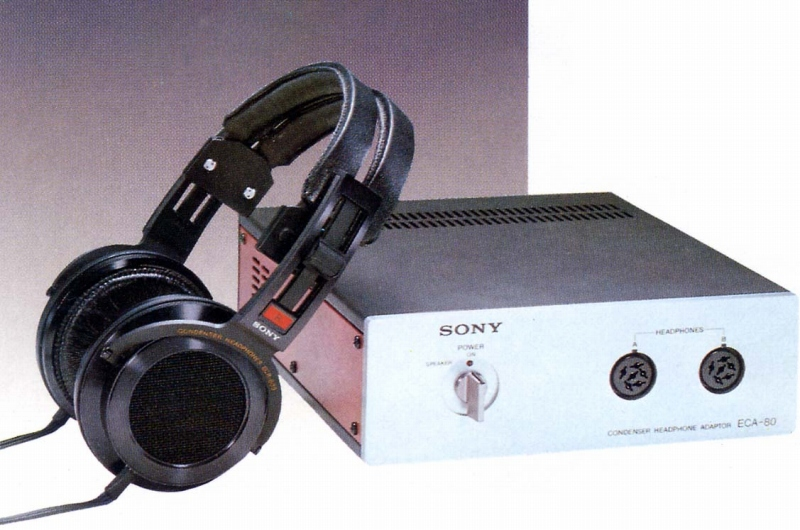
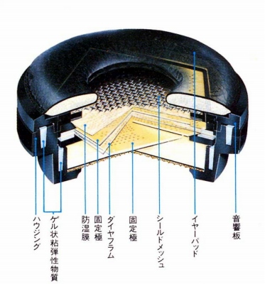
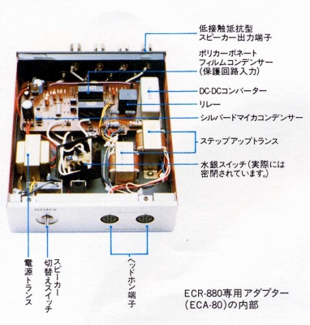
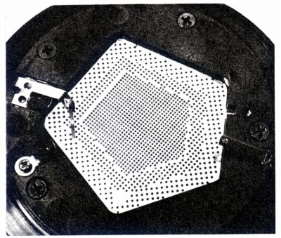
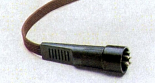
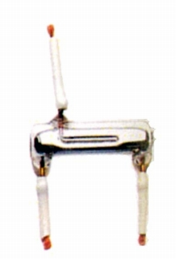
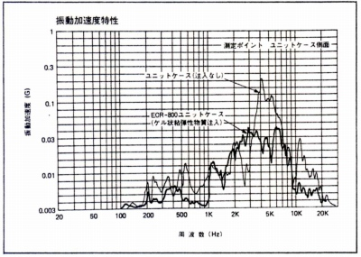

ECR-800




■価格 30,000円
■型式 コンデンサー型
■振動板 2ミクロン厚不等辺五角形ダイヤフラム
■インピーダンス
■再生周波数帯域 20-40,000Hz
■許容入力
■感度 97ｄB
SPL
■コード 2.5ｍ 6線平行
■重量 430g（コード含まず） アダプター3,540ｇ
■発売 1978年10月
■販売終了 1983年頃
■備考 アダプター付属の場合 ECR-880 75,000円（アダプターの単体販売は無し）
ソニー唯一の純コンデンサー型？
アダプターの6ピン端子は従来の4ピンプラグ(ECR-400,500,600) を接続可能

スピーカー/ヘッドフォン切替に水銀スイッチ採用

ボディ内部にゲル状粘弾性物質を注入し、振動をおさえる設計
